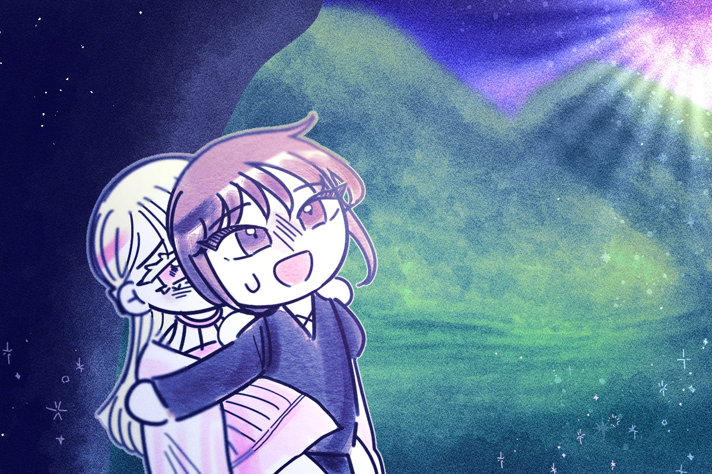

전 애너벨을 업고 굴을 따라 올라갔습니다. 그리고는 생각했습니다. 천사들은 호의적이지는 않았지만 저에게 진실만을 이야기했습니다. 하지만 악마들은 제가 생각했던 것보다 호의적이었습니다. 그렇기에 저에게 거짓을 말한것일까요? 악마의 말을 따랐다면 애너벨은 어떻게 됐을까요? 아니, 애당초 악마들은 저에게 무엇을 원했던 것일까요?
그런 생각의 끝에서, 저는 애너벨과 지상을 밟았습니다. 그런 고민들은 이제 아무런 의미가 없었습니다. 모든게 끝났으니까요. 우리는 누가 먼저할 것 없이 서로를 껴안았습니다. 그곳에선 달빛도 우리를 환하게 비추어 주고 있었습니다.

